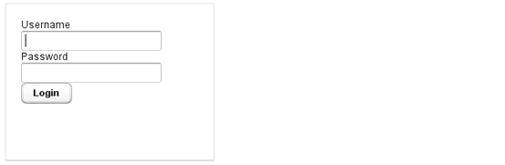

SQL: Database attacks
What is an SQL injection?
SQL security
SQL is a language used to query and administrate various databases systems. Database systems are used to provide backend functionalities to different types of web applications. An SQL injection attack is an attack that is aimed at "tricking" the original intent of the application by submitting attacker-supplied SQL statements directly to the backend database. A successful SQL injection exploit can allow the malicious attacker to access sensitive data from the database and modify database data (Insert, Update, Delete) or even execute administration operations on the database.
SQL injections
A SQL injection attack involves the alteration of SQL statements. In the case of a database built with insufficient input validation and improper construction of SQL statements in web applications, this base can be exposed to SQL injections. An SQL injection can generally be used for the following types of attacks:
- Authentication Bypass: This attack allows an attacker to log on to an application, potentially with admins privileges, without supplying a valid username and password.
- Information Disclosure: This attack allows an attacker to obtain, either directly or indirectly, sensitive information in a database.
- Compromised Data Integrity: This attack involves the alteration of the contents of a database.
- Remote Command Execution: Performing command execution through a database can allow an attacker to compromise the host operating system.
Authentification bypass example
One of the many possible uses for SQL injection involves bypassing an application login process. Here is an example to illustrate a possible and basic scenario of a SQL injection attack. Imagine an HTML form that solicits login information from an application user such as:

<form action="/bin/login" method=post>
Username: <input type=text name=username>
Password: <input type=password name=password>
<input type=submit value=Login>
Here, when a user enters his information in the form and click on connect , the browser sends a string to the Web server that contains the user credentials. This string appears in the body of the HTTP or HTTPS POST request as:
username=submittedUser&password=submittedPassword
An application with a vulnerable login process may accept the submitted information and use it as part of the following SQL statement, which locates a user profile that contains the submitted username and password:
SELECT * FROM Users WHERE (username = 'submittedUser'
AND password = 'submittedPassword');
If an application accepts and processes user-supplied data without any validation (unless strict validation), an attacker could submit a maliciously crafted username and password. Consider the following string:
username=admin%27%29+--+&password=+
Once this string is received and URL-decoded, the application will attempt to build a SQL statement using a username of admin') -- and a password that consists of a single space. Placing these items into the previous SQL statement is percived by the database like:
SELECT * FROM Users WHERE (username = 'admin') -- AND password = ' ');
Here, the attacker-crafted username changes the logic of the SQL statement to effectively remove the password check. In the above example, an attacker could successfully log in to the application using the admin account without knowledge of the password to that account.
Notes: The string of two dash characters (--) that appears in the crafted input is very important (it indicates to the database server that the remaining characters in the SQL statement are a comment and should be ignored). This capability is one of the most important tools that is available to an attacker and without it, it would be difficult to ensure that the malicious SQL statements were syntactically correct.
Before trying...
SQL injection attacks allow attackers to spoof identity, do whatever you want with existing data, including destroying the data or make it otherwise unavailable by becoming administrators of the database server.
In many countries (including US) it is illegal to use this attack. You risk up to 6 months in jail for unauthorised access and up to 5 years if with intent to commit further offences.
Usefull links
Many informaton and examples of this article come from a much more complete post from Mike Schiffman is a member of the Applied Security Intelligence (ASI) organization at Cisco. For informational purposes, some SQL injection tutorial and cheat sheets can be found here, here and here.
Remember NOT to test SQL injection on live web applications otherwise you expose yourself to Fraud and related activity in connection with computers laws. If you want to test SQL injection, here is a page where you can make a simulation of database injection.
Some other useful resources about SQL related web security, such as the Open Web Application Security Projet and the Top 10 threats of 2013.
Posted Wednesday, October 28 — 2015